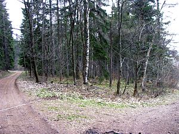
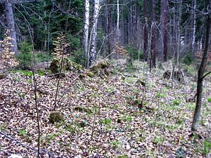
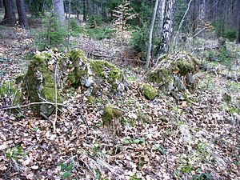
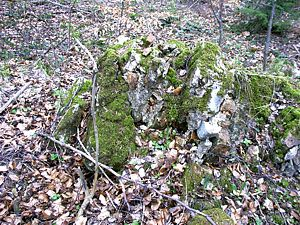
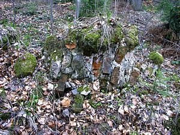
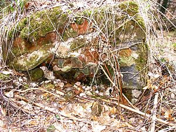
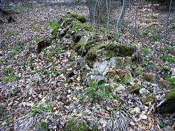
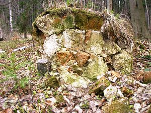

Lindenau - Säule - 04-2004
Choć mieszkałem w Lipienicy przez 30 lat, to jednak niektóre miejsca są dla mnie zagadką. Przykładem niechaj będzie poniższy przykład. Przyglądając się starym mapom zauważyłem miejsce które nie było mi znane. Chodzi mi o kapliczkę opisywaną jako "Säule" (co po niemiecku oznacza "kolumna") leżącą trochę za Lipienicą (Lindenau) w stronę Lubawki (Liebau). Dla przykładu, tak wygląda to miejsce na mapie "HEIMATKARTE des Kreis LANDESHUT" wydanej przez Lith.u.Druck Geographisches Institut Paul Baron, Liegnitz. Skala tej mapy to 1:100.000, nie znam dokładnej daty jej wydania, ale szacuję, że są to lata trzydzieste XX wieku. Moim zdaniem fakt umieszczenia tego obiektu na mapie o tak dużej skali świadczy o tym, że było to miejsce dość istotne.
To samo miejsce na mapie "Landeshut", skala 1:25.000, z roku 1886.
Na jeszcze starszej mapie, "Karte des Deutschen Reiches" arkusz 473 Friedland, skala 1:100.000, z roku 1824, widać w tym miejscu napis, ale niestety nie potrafię go odczytać ...
Chciałem się przekonać, czy po kapliczce tej zostały jakieś ślady. Wybrałem się więc do lasu, ale niestety kapliczki ani choćby najmniejszego jej śladu nie znalazłem. Okazało się jednak, że szukałem jej w złym miejscu (ale szukałem jej "na pamięć", bez mapy przy sobie). Dlatego też następnym razem zabrałem ze sobą wydrukowaną mapę i poszczęściło mi się bardziej :-)
|  | Widocznych wyżej mapek nie można powiększyć, jednak już te zdjęcia z lewej strony można sobie w miarę potrzeb kliknąć aby cokolwiek dojrzeć. Muszę przyznać, że wyszły one jakoś "płasko" i nie widać na nich dokładnie tego co udało mi się znaleźć w tym oto widocznym lasku, ale cóż ... jak ktoś chce zobaczyć lepiej, to niech sam pojedzie do Lipienicy :-) |
|  | Idąc prosto od wcześniejszego ujęcie już po kilkunastu metrach widzimy trzy kupki gruzu ceglanego i kamiennego obrośnięte mchem, trawą i krzakami. |
|  | Dwie pierwsze kupki to fragmenty wywróconej kolumny ... |
|  | ... lewy, pierwotnie będący niżej |
|  | ... i prawy, wyższy |
|  | ... i troszeczkę dalej sama góra kolumny, która podczas upadku oddaliła się na kilka metrów. |
|  | Patrząc z boku można sobie wyobrazić, że kiedyś była to kolumna. |
|  | Najlepiej jednak o fakcie, że są to fragmenty kolumny, śwadczy to oto zdjęcie. Jest to inne ujęcie elementu nazwanego wcześniej "prawym". Widać tutaj dokładnie fragment przekroju poprzecznego, gdzie wzajemne położenie cegieł, które ułożone są po coraz to większych okręgach, pozwala twierdzić, że jest to fragment kolumny. |

{kind=link}
{kind=link}
{kind=link}
{kind=link}
{kind=link}
{kind=link}
{kind=link}
{kind=link}